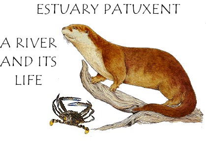

My wife Linda loves to teach. She spent 24 years as a docent/guide at the Smithsonian’s National Air and Space Museum and since we retired to Southern Maryland, has found a new museum, the Calvert Marine Museum in Solomons. There she introduces creatures of the Bay at the Touch Tank. These include the Horseshoe Crab (which is not a crab at all but is a very special creature) and the Northern Diamondback Terrapin (Maryland “Terp”), red-jointed fiddler crabs, Blue Crabs (a real crab) a river otter and other local species.
Linda also conducts “Chespax” sessions. Chespax is designed for the school children of Calvert County and teaches appreciation of the Chesapeake Bay, its environs and creatures. It focuses on people’s effect on the environment and their related responsibilities. There are several facilities that conduct Chespax and every primary student is required to take these sessions. The Calvert Marine Museum (CMM) Chespax program discusses the region’s paleontology and the creatures of the Miocene that lived here between 8 and 20 million years ago in the middle of the Miocene era. During that time parts of the East Coast were covered by a shallow sea in which lived sharks and whales including the largest shark known – megalodon. As the cliffs in the area erode, fossils and sharks' teeth are constantly exposed. CMM has the largest paleontology collection of Miocene marine fossils from the Calvert Cliffs outside of the Smithsonian Institution. It is uniquely qualified to present this material and allow the children not only to see but to handle fossils 8-20 million years old.
It is a significant challenge to convey the extensive amount of information in a manner that fourth graders will assimilate in a four-hour session as well as to develop some appreciation of the fossils’ age and how things evolved over the years to the present. Fortunately it is usually possible to get the 4th graders really interested because kids are fascinated by sharks and by really, really old things.
